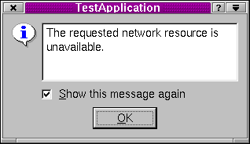

QErrorMessage类参考
QErrorMessage类提供了错误消息显示对话框。
详情请见……
#include <qerrormessage.h>
继承了QDialog。
所有成员函数的列表。
公有成员
公有槽
静态公有成员
详细描述
QErrorMessage类提供了错误消息显示对话框。
基本上是QLabel和记住什么不显示的“show this message again”检查框。
这里是使用这个类的两种方法：
- 对于产品应用程序。在这种情况下，这个类可以用来显示你不需要用户看到超过一次的信息。像这样使用QErrorMessage，你用手工的方式创建对话框并且调用message()槽，或者把信号和它连接起来。
- 对于开发人员。在这种情况下，静态的qtHandler()使用qInstallMsgHandler()安装一个消息处理器并且创建一个用来显示qDebug()、qWarning()和qFatal()的QErrorMessage。
在这两种情况下，QErrorMessage将把没有处理的信息排队，并且按顺序显示它们（或者不显示），只要用户在看到每一条消息之后按下Enter或者点击OK。

也可以参考QMessageBox、QStatusBar::message()、对话框类和杂项类。
成员函数文档
QErrorMessage::QErrorMessage ( QWidget * parent, const char * name = 0 )
构造并安装一个错误处理器窗口。父对象parent和名称name都被传递给QDialog的构造函数。
QErrorMessage::~QErrorMessage ()
销毁这个对象并且释放任何已经分配的资源。特别地，“do not show again”消息列表也被删除。
void QErrorMessage::message ( const QString & m ) [槽]
显示消息m并且立即返回。如果用户要求m不被显示，这个函数将什么都不做。
通常，m只被立即显示，但是如果存在未处理的消息，m将被排到队列中，稍后会显示。
QErrorMessage * QErrorMessage::qtHandler () [静态]
返回输出默认Qt消息的QErrorMessage对象的指针。如果没有这样的对象存在，这个函数创建一个这样的对象。
这个文件是Qt工具包一部分。
版权所有 © 1995-2002
Trolltech。保留所有权利。